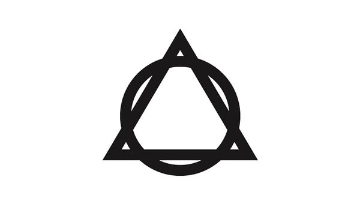

Phil's logo became the symbol of a revolution. But what's the deal?
In the world of the book, the circle and triangle symbol came to represent Phil's revolution. But what's the story behind it? We sit down with The Author to discuss the shape of things...

Ok. So... here we are again. Hello me!
Yes, hello me. It’s all a bit awkward isn’ it.
Don’t worry. Interviewing yourself is a healthy exercise. No harm there.
But the fact that this is taking place to promote a book where the main villain is narcissism itself... the irony isn't lost on me.
Nor me… but let’s talk about your circles and triangles! Haha… They’re everywhere! On Phil’s album covers, on the website, you’ve made them into t-shirts, hats and even had one or two tattooed on you. Bit weird, eh… So: where did it all begin?
Haha… yeah pretty weird. Truth is that I’ve had them for years. They literally came from when I was about fifteen, walking home, stoned out of my box, and thinking about the world and how it seemed like all these big ideas appear in threes: art, science, religion; beginnings, middles, ends; past, present, future; one extreme, the other extreme, the middle… just bullshit stuff really. But I was fifteen remember.
Anyway, I walked around a corner and in front of me was a mini-roundabout with three traffic cones on it and I literally stopped in my tracks: it was a fucking sign from God! Haha... I was very stoned. But I remember stopping in the street for… I now know how long and running it over. And the one that really got me - the one I took home - was the art, science and religion thing. That idea that human civilisation could be broken down into these three areas: what is: science; what could be: art; and what should be: religion. At the time I felt - the same as I do now - that we need to build a society on those three pillars, but that one of them, in particular, is failing terribly.
Which one?
Religion. Religion is a disaster area. One of my favourite ways of musing about things is to reduce them to their evolutionary purposes. What's the point of this thing? Sports, for example, a great way to manage aggression and conflict and improve your health in a way that isn't socially destructive. Sports are really valuable - especially if you play them and don't just pretend you're into sports because you watch it every Sunday with a six-pack. But when you ask that same question of religion - what is the point of religion - you appreciate things a little differently. I believe that at its most basic level religion should ask and answer questions about what is right. Not what could be or what is, but what should be. But it's been stuck on the same track for thousands of years while the world has evolved around it and honestly… it's become a liability.
How do you see its role? What should it do?
If art provides ideas and options and explores potential; and then science deals with what is real in the world and then takes that understanding to create new tools and…
Actually could you just take a minute to explain the other two: art and science. What are their roles?
Science I think we know - we're good at science. It explores what's real and then invents wonderful ways to combine things to increase opportunities. Anything from flying to the moon to microwaving some popcorn has come about because science is very good at what it does.
Art is more interesting, for me anyway. But it's important to understand that when I talk about art I'm not just talking about the art we hang on our walls or go to see at the cinema or at a gig - and all of that is art, by the way. But art for me is more about the things that our imaginations have made real. I'm a big fan of Nuval's Sapiens book and his understanding of stories. Money is a story, law is a story, culture, nationalism, politics… they're all the creations of art. Art can turn something that doesn't exist - an idea - and make it real. Not make it appear in material form, but create an idea that's so strong, so persuasive, that we make it real - or act as if it's real anyway.
Our society is held together by ties that largely don't exist except that we believe in them; and because we do, we make them real.
But art is also a way of realising emotional responses to things. Novels and films help us understand and organise our emotional responses to events and people and in that respect - by utilising our empathy and allowing us to experience things without having to actually experience them - we choose what we fear and what we dream of and this helps to guide us on our way. Who do we want to become? We decide this through our choice of heroes. Who do we fear? We decide this, based on the way we choose our enemies.
So art is a form of propaganda?
Well… maybe. I mean kind of. But it shouldn't be. Art's role is just to present us with options… look, the separation between art science and religion is artificial, really. They overlap so much and so often that they're often almost impossible to see at work individually. Imagine that everything is a molecule and I'm trying to define the atoms. But yes, art can change how we feel about things… so yes, to an extent, all art is propaganda. You look at something like A Christmas Carol and it's clear. By going on Scrooge's journey we change our view on wealth. Look at the way that music throughout the 60s played such a crucial role in the civil rights movement… But, in my model, that's art functioning as religion. Religion should be making that distinction. Art can throw everything out there - and it does, really; you can find art that expresses just about a billion different viewpoints - but there needs to be some kind of filtration process. Some kind of real discussion about the many different moralities that it explores.
So you think that should be religion's role?
Religion should be constantly asking what we should do. What is the right course of action? What is healthy, what is progressive, what's culturally developmental, what's… good… what is right. And like Bill says in the book, I don't mean right in a kinda happy-clappy kum-bye-yah kinda way, I mean what's the right answer. There are, I believe, right and wrong answers with morality. They're just a lot more complicated than we think.
Isn't that what the Bible does though? Provide moral guidance?
The Bible was written for a different world. Maybe that was what we needed then, but I didn't live then so I can't comment… but those rules are absolutely not for this world. Our world is too different for most of that to have anything other than a passing relevance. What does the Bible say about public ownership of essential services? What does it say about taxing assets instead of income? What does it say about tax havens, or the benefits and pitfalls of working within a democracy? What does it say about an adult's right to change gender? Nothing, because the tech didn't exist back then. And even if you take the things that are in there, like gay marriage, what it does say is so outdated that it's clearly criminal - you can't stone people to death for that anymore. That is wrong. Half of what that book says is outdated nonsense but people are still obsessed with trying to pretend it's got something to say.
What about tradition? Isn't there a danger in just dropping old laws that have served us well before?
Of course! And that's why evolving religion has been so hard. The truth is that Jesus and Mohammad and Buddha and the rest needed to present their truths as being timeless and final in order to be listened to. So all of them, in some way, say 'don't change this or you'll be fucked forever.' Which kinda worked at the time, but it made it very hard to change. Imagine if Plato or Aristotle or Socrates - any scientist - imagine if they'd said: 'anyone who writes about this differently to me will go to Hell and be tortured forever!' You'd get no more science, and the world would be a lesser place. That's kinda what all the prophets did and it's made it very hard to move on from them. We're basically roasted unless we're a Messiah, but no-one is that so religion stops evolving and its influence falls apart and… you get what we've got which is that religion is dying.
What do you think will happen if it fails completely? What kind of a world would that be?
The one we're in! Or we're heading there anyway. Science has lots of ideas about what's happening and what things are made of and where they come from, but it can't tell you why. It can say how your brain works but there's no formula to prove that your existence is worthwhile. Left to its own devices, science would turn us all into nihilists. There's no meaning in the world, so why try and find it? You're born, then you die, and the sun carries on shining. There's no point in trying because the universe will all explode in one giant heat death and so what's the fucking point? Follow science too hard, and that's where you get.
Art brings a different kind of destruction - the hedonism of creation is such a joy. Why not experience your dreams and push the boundaries endlessly - write, sing, dance, express your joy! You're amazing! Fuck off… Again, you can make anything you want but what's the point of it? It can make life beautiful or terrible - both of which can be enjoyable experiences when you're only living it through some fictional character - but it can't tell you why you should bother trying to make something more meaningful or more important or more valuable.
What about things like children, or society as a whole, aren't they reasons enough to do what's right?
Yes! And that's the fertile ground where religion should live. Why do we do what's right? Why do we care about the future? Why should we make sacrifices now so that things can be better in the future? These are the levers that should be spoken about in every sermon or monastery in the world. Why is it important to be honest? Because without honesty reality itself starts to crumble - like we're seeing today with the news. Why should the rich share their wealth? Because a stable society is one that can last, while a society of narcissists will always eat itself in the end. Religion needs to explore two things: what is right; and how can we persuade society to believe it's worth being right. At the moment, it can't do the first one because it's too entrenched in ancient manuscripts and, as a result, it's never going to do the second. The net result is that religion is failing and our society is drifting into nihilism and hedonism. And you carry on down that path, and Hell is round the corner.
So what's Phil's role in this? Is he supposed to promote religion?
He's all about art and religion I guess. It's not about science, I have no problems with science. Science just explores what is and there's kinda no point in arguing with it. Art is complex and religion's a mess, and Phil uses the former to try to change the latter. Art is the tool, after all. Religion and art have always gone hand-in-hand and they should. The trouble with religion, as I said earlier, is that you can only change it if you're a Messiah and… that's just not a role that you get many applicants for. I can see why as well. You get hounded, abused, tortured, murdered and then stuck on a pedestal for all time. Not a great life. No fun. I'm just glad it's him doing it and not me! But that's the power of fiction. That we can send these people out there and do things that aren't real but have effects. Fiction allows us to create people, who have effects, but have never lived. We need this opportunity, and I guess that was the drive that kept me writing this book over all these years. We need people like Phil. I'm really sorry for what I've had to put him through!
Thank you for your time.
Your pleasure.